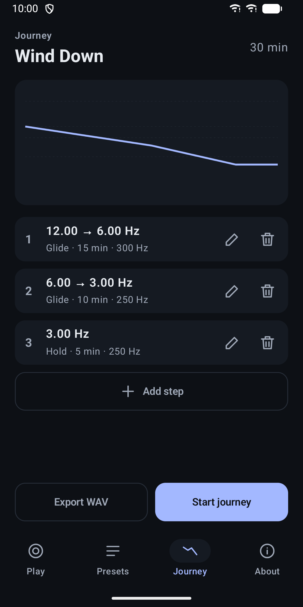
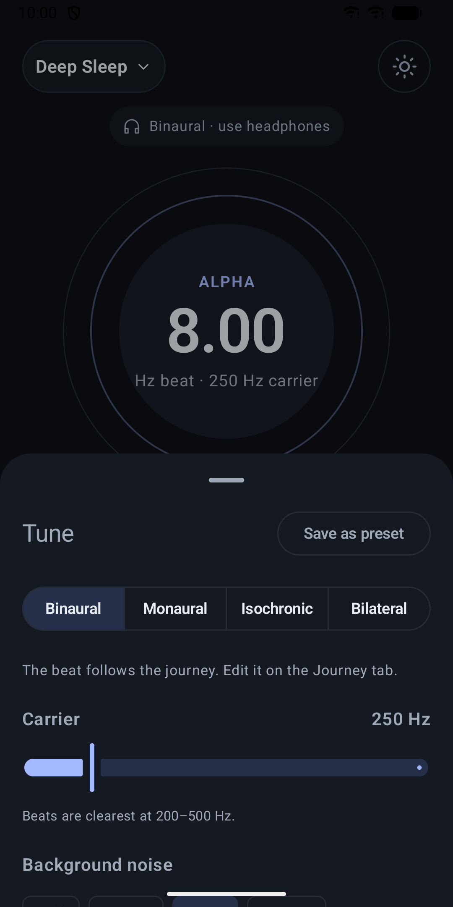
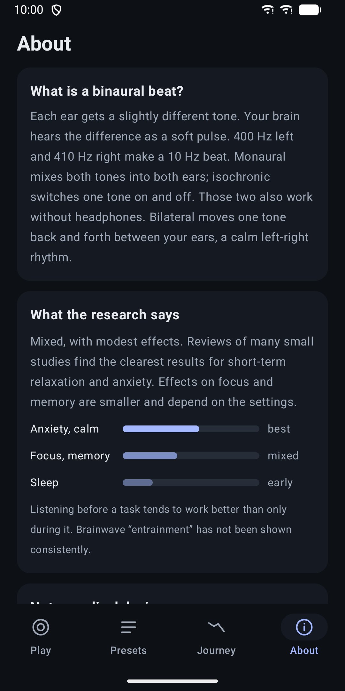

Binaural Beats
Binaurale und isochrone Beats für Ruhe, Fokus und Schlaf.






Über die App
Binaural Beats erzeugt sanfte Beat-Töne live auf deinem Handy. Wähle eine Vorlage, passe sie an und lass sie im Hintergrund laufen, während du entspannst, meditierst, arbeitest oder einschläfst. Vier Arten, einen Beat zu hören • Binaural: Jedes Ohr hört einen leicht anderen Ton, und du nimmst den Unterschied als sanften Puls wahr. Mit Kopfhörern. • Monaural: Beide Töne werden auf beide Ohren gemischt. Funktioniert auch über Lautsprecher. • Isochron: Ein Ton, der sanft ein- und ausgeht. • Bilateral: Ein Ton wandert ruhig zwischen linkem und rechtem Ohr hin und her. Beim Wechsel des Modus wird weich übergeblendet, ohne Knacken. Klang anpassen • Beat von 0,25 bis 45 Hz, mit Anzeige des Frequenzbereichs (Delta, Theta, Alpha, Beta, Gamma). • Trägerton von 100 bis 1000 Hz. • Auf Wunsch weißes, rosa oder braunes Rauschen mit eigener Lautstärke. • Sinus oder weiches Rechteck als Pulsform für isochron und bilateral. Sitzungen mit sanften Übergängen Wähle 5 bis 90 Minuten oder ohne Limit. Jede Sitzung blendet ein und am Ende wieder aus, auch Pause, Fortsetzen und Stopp werden weich geblendet. Reisen Baue eine Sitzung aus Schritten, die einen Beat halten oder langsam zu einem anderen gleiten, zum Beispiel von 12 Hz hinunter auf 3 Hz zum Abschalten am Abend. Ein Diagramm zeigt den Verlauf. Vorlagen Acht Vorlagen sind dabei: Tiefschlaf, Nickerchen, Entspannung, Meditation, Ruhiger Fokus, Aktiver Fokus, Gamma-Aufmerksamkeit und Abschalten. Speichere eigene Versionen, dupliziere, benenne um, lösche sie und importiere oder exportiere sie als Datei. Läuft im Hintergrund Die Wiedergabe läuft auch bei ausgeschaltetem Bildschirm weiter, mit Steuerung in der Benachrichtigung und auf dem Sperrbildschirm. Ein Widget zeigt die aktuelle Vorlage mit Play-Taste. Die App pausiert keine anderen Audioquellen, so kannst du Beats leise unter Musik oder einem Podcast hören. Als Audio exportieren Speichere eine Sitzung als WAV-Datei und spiele sie überall ab. Ehrlich zur Studienlage Die Info-Seite fasst die Forschung in einfachen Worten zusammen: Die Effekte sind gering und uneinheitlich, am deutlichsten bei kurzfristiger Entspannung. Die App ist ein Entspannungswerkzeug, kein Medizinprodukt. Vor dem ersten Abspielen zeigt sie einen kurzen Sicherheitshinweis zu Lautstärke, Autofahren und Erkrankungen. Privat von Grund auf Kein Konto, keine Werbung, kein Tracking und kein Internetzugriff. Deine Vorlagen und Einstellungen bleiben auf deinem Gerät. Außerdem: helles und dunkles Design, eine Option für weniger Bewegung, und Deutsch, Englisch und Spanisch.